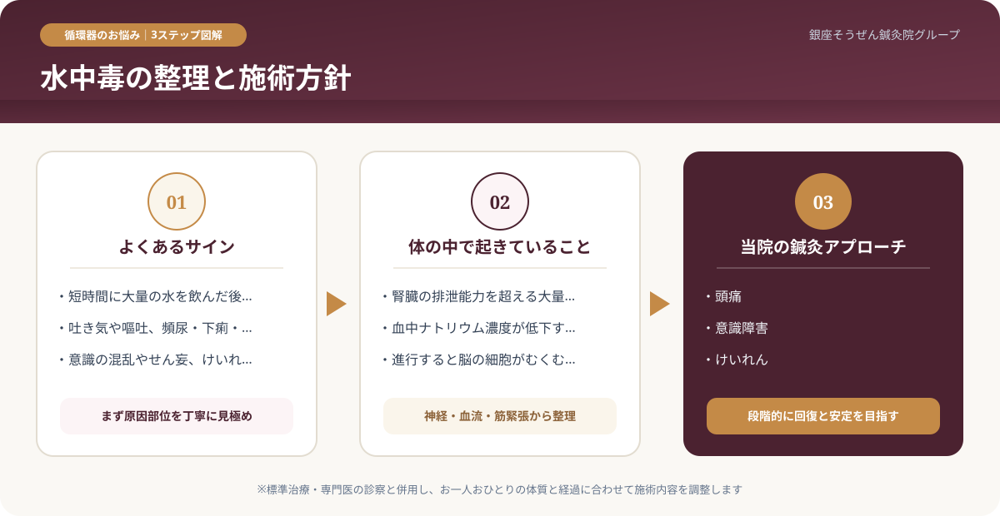
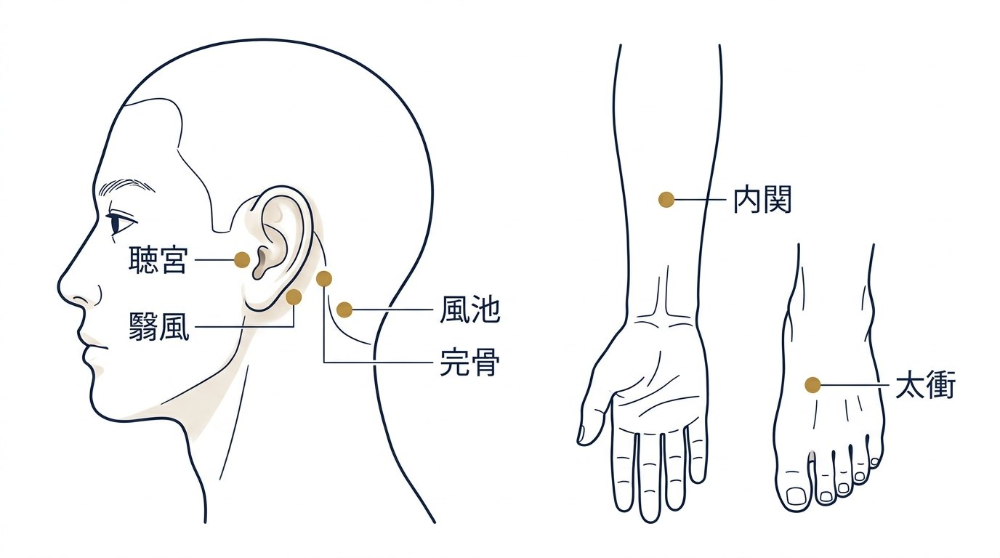

水中毒の鍼灸
水分の過剰摂取で血液のナトリウム濃度が急低下する危険な状態です。急性期は救急対応が最優先で、安定期のストレス管理を支援します。
まず知っておきたい要点と改善の流れ

腎臓の排泄能力を超える大量の水分を摂取することで血液が希釈され、血中ナトリウム濃度が低下する「低ナトリウム血症」に陥る状態です。進行すると脳の細胞がむくむ脳浮腫を起こし、命に関わる危険があります。過度な飲水習慣や運動時の誤った水分補給のほか、腎機能障害、抗利尿ホルモン（ADH）の異常、利尿薬などの薬剤、強い心理的ストレスによる多飲傾向などが関与します。
このようなお悩みはありませんか？
- ✓短時間に大量の水を飲んだ後に頭痛やめまいが出た
- ✓吐き気や嘔吐、頻尿・下痢・失禁がみられる
- ✓意識の混乱やせん妄、けいれんがある（救急必須）
- ✓ストレスや不安から水を飲みすぎてしまう習慣がある
当院の施術アプローチ・改善の流れ
なぜ鍼灸で改善へ向かうのか？（作用機序の図解）
水中毒に対する鍼灸は、心拍変動・血管トーンを整える自律神経サポート機序を通じて、お体本来の回復力を引き出します。

循環器専門医の標準治療を絶対前提とし、手首や背部の安全な経穴へ低刺激でアプローチします。
心臓への過剰な交感神経刺激を穏やかに鎮め、心拍リズムと血管緊張の急変を抑えます。
ストレスで固まりやすい胸郭や横隔膜の緊張を解き、酸素摂取とリラックス反応を促します。
内服管理を厳守しながら、疲労やストレスが引き金となる症状不安の軽減を支えます。
院長YouTube解説・関連動画
水中毒の改善例
Aさんは、アウトドアイベントで長時間の激しい運動を行った後に、頭痛やめまいを訴えて病院にいきしました。Aさんはイベント中に大量の水を摂取しており、特に暑い日だったために多くの汗をかいていました。病院で調べた結果、Aさんは水中毒の疑いがあり、すぐに改善が必要と判断されました。
1. 医師の評価
Aさんには頭痛、めまい、そして疲労感が見られることから、低ナトリウム血症による水中毒の可能性が高いと考えられました。医師はAさんに対して詳しい症状やアウトドアイベントの経緯を尋ね、水の摂取量についても詳細な情報を収集しました。
血液中のナトリウム濃度が低下しているかどうかを調べることで、水中毒の疑いを確かめることができるため血液を調べました。Aさんのナトリウム濃度が低下していることが確認され、水中毒の判断が確定しました。
3. 水の制限と脱水
Aさんの改善は、まず水の制限と脱水から始まります。医師はAさんに対して、しばらくの間は水分の摂取を制限するよう指示しました。また、点滴による脱水も開始され、過剰な水分を体外に排出し、ナトリウム濃度を正常に戻すための対応が行われました。
4. エレクトロライト補給
脱水による水分排出に伴い、体内からナトリウムなどのエレクトロライトも失われる可能性があります。そのため、ナトリウムを含むエレクトロライトの補給も行われました。点滴による脱水と同時に、ナトリウムを含む点滴液が投与され、体内の水分バランスを調整しました。
5. 症状の管理
Aさんの症状である頭痛やめまい、疲労感なども改善の対象となります。医師はAさんに対して症状の管理を行うための薬物を実施しました。痛みや不快感を軽減する薬剤や、身体の休息を促す薬剤などが使用されました。
6. 原因の対応
Aさんの水中毒の原因は、アウトドアイベント中に過剰な水の摂取によるものでした。医師はAさんに対して、今後のアウトドア活動において適切な水分補給を心掛けるようアドバイスしました。また、過度な運動による水分損失にも注意するよう指導しました。
7. 経過観察
Aさんの改善後は、経過観察が行われました。症状の改善やナトリウム濃度の回復が確認された場合には、改善を終了し、通常の生活に戻ることができます。ただし、重度の水中毒の場合は、回復までに時間がかかることがあります。そのため、医師の指導に従い、定期的に病院に行き経過観察を受けることが重要です。
以上が、水中毒の改善の一般的な例です。改善方法は、個人の状態や症状によって異なるため、個々に応じて最適な方法が選択されます。
メニエール病・難治性めまい・耳鳴りのツボ図解
実際の施術ではお一人おひとりの体質・症状に合わせて選穴しますが、メニエール病・前庭性片頭痛・耳鳴り・難治性めまいの内耳循環ケアの臨床でよく用いられる代表的なツボの目安です。

📌 代表的なツボの詳細一覧表を開く（6穴） ▼
| ツボ名 | 位置の目安 | 主な狙い | セルフケアの注意点 |
|---|---|---|---|
| 聴宮（ちょうきゅう） | 耳の穴の前、口を開けるとくぼむ場所 | 内耳周囲の微小循環改善・耳閉感や耳鳴りケア | 強く押さず口を少し開けて優しく触れます。 |
| 翳風（えいふう） | 耳たぶのすぐ後ろのくぼみ | 内耳・三叉神経・顔面周囲の血流とリンパ循環促進 | めまい発作直後は首を動かさず静かに温めます。 |
| 風池（ふうち） | 後頭部の生え際のくぼみ | 後頭下筋群の緊張緩和・椎骨動脈血流サポート | 親指で上向きに優しく支えるように押します。 |
| 完骨（かんこつ） | 耳の後ろの出っ張った骨の下後ろ | 平衡感覚の安定・睡眠の質改善 | 左右の張りを比べながら優しく緩めます。 |
| 内関（ないかん） | 手首の横ジワから指3本分肘寄りの中央 | めまいに伴う吐き気・自律神経発作の鎮静 | めまいが出そうなときのセルフ指圧にも有効です。 |
| 太衝（たいしょう） | 足の甲、親指と人差し指の骨の間 | ストレス性の内リンパ水腫悪化・イライラの緩和 | 深呼吸と合わせて3〜5秒ずつ押します。 |
国際査読論文の科学的エビデンス
国際的な医学データベース（PubMed・Cochrane等）で報告されているメニエール病・前庭性片頭痛・耳鳴り・難治性めまいの内耳循環ケア領域の代表的な査読済み鍼灸研究をまとめています（標準治療との併用や研究上の限界を含めて正確に掲載）。
📚 査読論文データ・PubMed出典リンクを開く（4件） ▼
| 年・研究デザイン | 対象・規模 | 主な結果 | 限界・出典 |
|---|---|---|---|
| 2019年 大規模多施設RCT | 慢性安定狭心症 398名解析（標準薬物療法併用） | 16週時点の4週間発作減少は実鍼群がシャム群比5.18回・待機群比5.63回多く有意改善（P<0.001）。 | 標準薬物療法への併用（補完）試験であり単独療法ではない。 JAMA Intern Med (PMID: 31355870) |
| 2007年 シャム対照RCT | 本態性高血圧 140名完了（ドイツ・24時間ABPM） | 治療終了時の24時間血圧はシャム比SBP -6.4mmHg・DBP -3.7mmHg有意低下（P<0.001）。 | 終了3〜6か月で治療前水準へ戻るため継続ケアが必要。 Circulation (PMID: 17548730) |
| 2015年 メタ解析 | 高血圧 23 RCTs（n=1,788） | 降圧薬＋実鍼は降圧薬＋シャム比でSBP -7.47mmHg・DBP -4.22mmHg有意低下。鍼単独は降圧薬と同等・根拠不十分。 | 盲検化・異質性に課題。降圧薬の自己中断は厳禁。 PLoS One (PMID: 26207806) |
| 2025年 メタ解析 | 心拍変動（HRV）10 RCTs（n=744） | 自律神経全体の適応指標SDNNを有意に改善、重篤な有害事象なし。 | LF・HFには不確実性が高くさらなる検証が必要。 Front Neurosci (PMID: 41230507) |
参考文献・出典
- 2019年 大規模多施設RCT（慢性安定狭心症 398名解析（標準薬物療法併用））— JAMA Intern Med (PMID: 31355870)
- 2007年 シャム対照RCT（本態性高血圧 140名完了（ドイツ・24時間ABPM））— Circulation (PMID: 17548730)
- 2015年 メタ解析（高血圧 23 RCTs（n=1,788））— PLoS One (PMID: 26207806)
- 2025年 メタ解析（心拍変動（HRV）10 RCTs（n=744））— Front Neurosci (PMID: 41230507)
よくある質問（FAQ）
Q. 水を飲みすぎて頭痛や吐き気が出てきました。どうすればよいですか？▼
Q. 水中毒を防ぐための適切な飲み方の目安はありますか？▼
あわせて読まれる関連疾患（循環器のお悩み）
脳や脊髄を覆う硬膜の動脈と静脈が直接つながる血管疾患です。脳神経外科での標準治療を最優先に、治療後の回復期を支援します。
体内の水分やナトリウム・カリウム等のバランスが崩れる状態です。専門医での検査と治療を最優先に、安定期の体調管理を支援します。
異常な血圧上昇により脳・心臓・腎臓などに急性障害が起こる救急疾患です。専門医での降圧治療が最優先で、安定期の体調管理を補完的に支えます。
50歳以上に多く頭部などの大型動脈に炎症が起きる指定難病の血管炎です。失明予防のため専門医でのステロイド治療が最優先です。
心臓の拍動を指令する洞結節の働きが低下し徐脈や動悸を起こす病気です。専門医管理を最優先に、安定期の体調を整えます。
血液中のヘモグロビンが不足して全身が酸欠状態になる症状です。医療機関での検査と食事改善を基本に、鍼灸で血行と自律神経を整えます。
CLINICAL RECOVERY CASES
✨ 実際の臨床改善事例・回復経過を見る
銀座本院をはじめ各院での実際の改善事例を症状別に絞り込んでご確認いただけます。
おひとりで悩まず、まずはご相談ください
銀座本院・川口・大宮・横浜・博多・田無の各院でご予約を承っております。